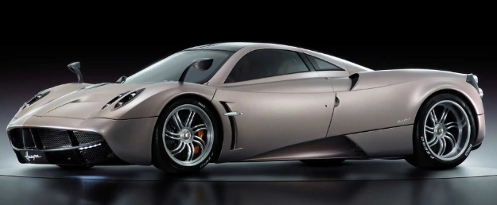
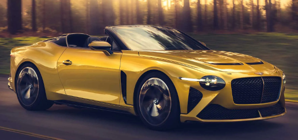
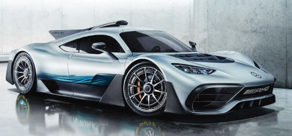

At £1.1 million new, the Ferrari LaFerrari is actually one of the most affordable supercars on this list. It’s a bargain compared to the most expensive vehicle here. Debuting in 2013 with 950 hybrid horses (708 kilowatts) and a top speed of around 220 miles per hour (354 kilometres per hour), this is still Ferrari’s fastest and most powerful production model to date. The company built just 499 examples of the coupe between 2013 and 2016.
Inarguably one of the prettiest cars on this list, the Pagani Huayra cost a cool £1.1 million when new. Like the LaFerrari, Pagani built the Huayra in extremely limited numbers. The company hand-constructed just 100 units of the coupe between 2012 and 2018, with another 20 versions of the BC model (which makes our list further down) between 2017 and 2019. Powering each and every example was a Mercedes-AMG V12 capable of 720 bhp (537 kilowatts).
With just 12 total units produced, the Bentley Bacalar makes some of the "limited" cars on this list look plentiful by comparison. Although the car’s opulent design may be the first thing to grab your attention, the Bacalar is no slouch in terms of performance either. With Bentley’s signature turbocharged 6.0-litre W12 turbocharged engine, this car delivers 650 bhp and 664 pound-feet. If you have a spare £1.5 million lying around and are considering buying one, you’re already too late – Bentley says that every example is now in customer hands.
Mercedes has promised a production version of the Project One hypercar for quite a while now. The first official announcement was in March of 2017 before the first concept debuted later that same year. But after nearly five years of teasing, it appears as if the Project One will finally hit public roads. And when it does, the hybrid hypercar will have over 1,200 bhp (895 kilowatts) and a price tag of £2.1 million.
Anasayfa